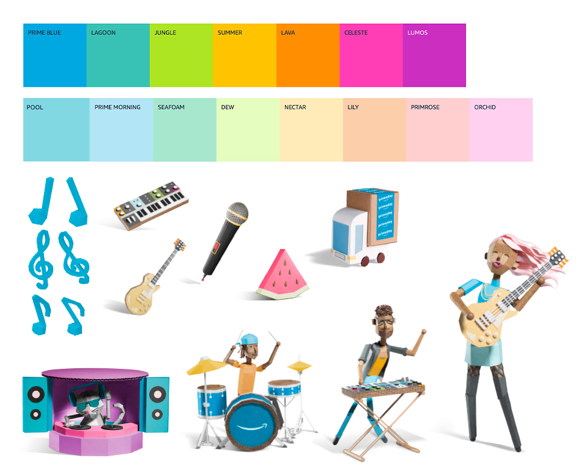
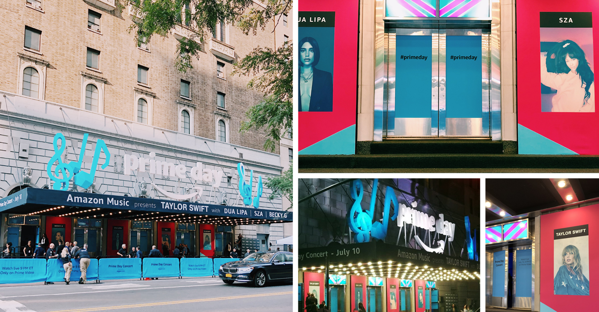
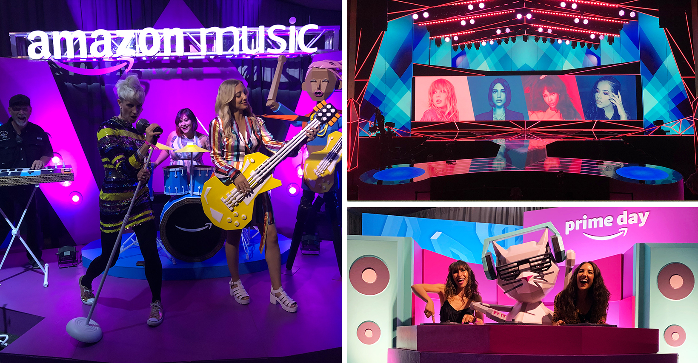

Brief
2019 was the 2nd year Amazon celebrated Prime membership with an exclusive Prime Day Concert. Featuring live performances by headliner, Taylor Swift, Dua Lipa, Sza, Becky G, and hosted by Jane Lynch. With a large budget and multiple stakeholders including Amazon Music and Amazon Video, this concert was to be broadcast live on Amazon Video. The venue itself allowed entrance to Prime members by invitation only at absolutely no cost with multiple photo opportunities and swag at the venue with Prime Day creative. A small creative team of three were responsible for the physical NYC venue experience with the creative director being stretched to oversee cross-over to onsite and Amazon Video. Managing 3rd party vendors, maintaining brand authenticity and maintaining creative at a high bar was a priority for myself and the rest of the creative team. With pantone colors in hand we headed to New York City 5 days prior to show time!
Assets & Color Pallet
Prime Day Concert exclusive creative assets were made for this event and utilized through-out the venue. In addition, we utilized the Out-of-Home color pallet which had more saturated colors. It was a conscience choice to use some of the on-site (pastel) color pallet as accent colors.
Exterior Signage & Posters
I assisted in managing installation of the 3D printed marquee that sat atop of Manhattan Center. Careful attention was given to kerning and orientation to each piece for brand authenticity. Taking a creative que from the motion graphics used for the event, I designed four 8ft x 4ft posters featuring our performers. These oversized posters were placed at the entrance of the venue. Assets for these “larger-than-life” posters was not an easy feat to acquire causing art direction to change from the original concept. Utilizing my past experience in photo editing I was able to salvage images that would otherwise not be usable in print of this scale. In addition to the art posters, I also designed an oversized “schedule of events” with art director oversight. Color matching between pieces was a challenge.
Lobby
This area did get lots of traffic. Most guests used the restroom facilities in this area where we partnered with
“Belei” for freebies. Catering was also set-up here as well as additional Wickedly Prime freebies. An opportunity
for guests to get free on demand t-shirts printed of exclusive Prime Day Concert swag! Designing for these t-shirts
was simple leveraging our Prime Day assets however, I did do a touch of editing and adjusted layout to a couple of the
designs.
As visual designer, I also handled the toolkit. This consisted of wayfinding signage, wristbands,
ambassador uniforms, partner signage, merch, catering menu… Pretty much any of the extra things to make the event come together.
Promenade
All guests stepped and viewed this space. On either side of this area, were photo opportunities to interact with our Prime Day papercrafts in the form of life size 3D sculptures. To the left of the entrance of the entrance was the Prime Day band. This sculpture featured a female singer, while guest were encouraged by our ambassadors to pose with guitars, keyboards and even play a drum set! On the right side of this space was a rather peculiar 3D sculpture featuring what we affectionally call “Cat DJ” who our ambassadors also encouraged guests to take pictures with. The challenge of setting up the promenade was to allow plenty of walking space towards the performance stage. The crew for sound control, lighting and effects were also set up here. It was upmost importance for them to do their jobs well, while our guests and ambassadors celebrated Prime Day with photos and music. Before show time, I and the rest of the creative team helped pose and place the 3D sculptures and signage while also noting defects and requesting the staging crew to make any repairs. The stage was made to look like Echo dots on either side. Looking up to the balconies there were barricades wrapped in Prime Day colors and music notes to carry through the theme and message. Pst… Stage motion graphics took a cue from me in colorizing the artist photos.
VIP Balcony
Although, I had little design work in this area, I helped with pre-press of the throw pillows, table tents and Rivet sign. I helped most with some physical labor moving furniture. I voiced my opinion about where to place catering tables and also helped stage the photo opportunities in this space. The directional signs to the restrooms were my handywork. lol
Basment & Toolkits
This area did get lots of traffic. Most guests used the restroom facilities in this area where we partnered with
“Belei” for freebies. Catering was also set-up here as well as additional Wickedly Prime freebies. An opportunity
for guests to get free on demand t-shirts printed of exclusive Prime Day Concert swag! Designing for these t-shirts
was simple leveraging our Prime Day assets however, I did do a touch of editing and adjusted layout to a couple of the
designs.
As visual designer, I also handled the toolkit. This consisted of wayfinding signage, wristbands,
ambassador uniforms, partner signage, merch, catering menu… Pretty much any of the extra things to make the event come together.
My Role
Visual Design & Motion Design
Team
Heather Mounsey - Creative Director
Allison Wagner - Photo Art Director
Katie Bren - Lead Design & Art Director
Abigail Harris - Project Manager